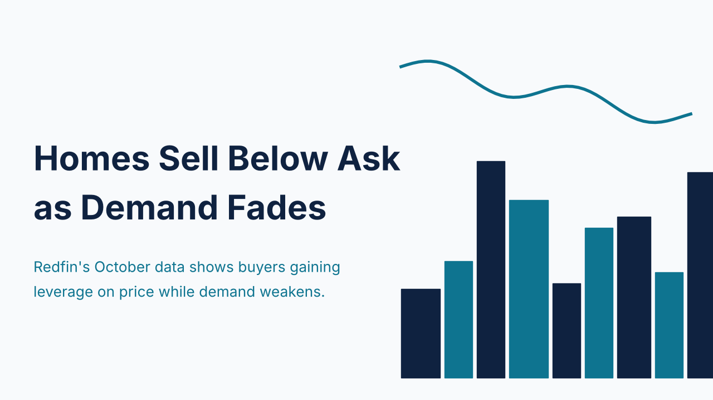
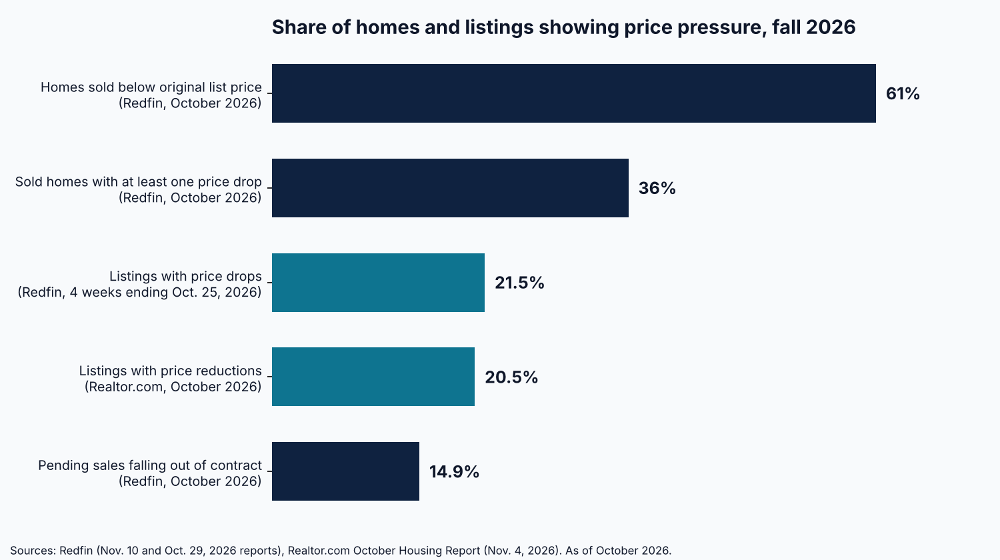

61% of Homes Sold Below Original List Price in October as Pending Sales Fell 15.1%

Redfin's October 2026 market report, published November 10, shows a housing market where price concessions are widespread even as transaction volume contracts. Homes that sold in October closed at an average of 96.1% of their original list price, and 61% of them sold below that original price. The median sale price was $388,634, down 0.4% from a year earlier, which Redfin described as the first annual decline since May 2023.
Time on market, by contrast, has not stretched. Redfin's median days from listing to pending was 50 in October, unchanged from September and one day longer than a year earlier. Realtor.com's October report, published November 4, measured a longer median of 63 days using its own methodology, also up one day year over year. The two series are not directly comparable, but both point to a market that is moving at roughly last year's pace rather than seizing up.
The softness shows up in volume and negotiation. Redfin counted 300,430 pending sales in October, down 15.1% year over year and the lowest level since 2013 outside of April 2020. Some 36% of homes that sold in October had at least one price drop, which Redfin described as the highest share in its records. In the four weeks ending October 25, 21.5% of listings had a price drop, and Realtor.com reported that 20.5% of active listings carried a price reduction in October.

Financing costs explain much of the hesitation. Redfin reported a 30-year fixed mortgage rate averaging 7.33% in October, up from 6.86% in September, and put the median monthly payment at $2,786 in the four weeks ending October 25, up 10.7% from a year earlier. Pending sales that fell out of contract reached 14.9% of the total in October, up 1.8 percentage points from a year earlier, a sign that some buyers are failing to close at current rates and prices. Active listings rose 2% year over year to roughly 1.53 million, with 4.3 months of supply.
For investors and lenders, the data cuts in two directions. Below-list closings and rising price cuts create room to negotiate a lower basis. At the same time, a 7.33% average rate raises debt service on every acquisition, so a lower purchase price does not automatically restore coverage. Underwriting a deal this month means testing the negotiated price against current financing terms rather than against asking prices that the market is no longer paying.
The October figures describe a buyer's market in price terms but not yet in speed. Watch the November reports for whether the 50-day median holds and whether the share of homes selling below list continues to climb.